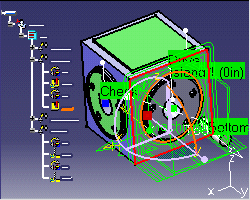
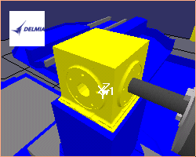
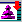

| Simulate your manufacturing process in VNC |
| Overview |
|  |
|
|
|
 |
| Installing the CATIA V5-VNC Bridge |
| Install DELMIA's VIRTUAL NC 5.3 or later level (for information, contact www.delmia.com), | |
| In CATIA V5 manufacturing, click on the  button to configure the "CATIA-VNC Bridge". After the configuration is done, you are ready to run your machining program simulation in VNC using this button . |
| Running the CATIA machining simulation |
| Create a manufacturing process.
The part operation must contain : |
| Click the
button
You will have to input the NC program name. Then, VNC is automatically launched with your CATIA manufacturing process data. Just start the program execution to see your part being machined. |
| Samples |
|